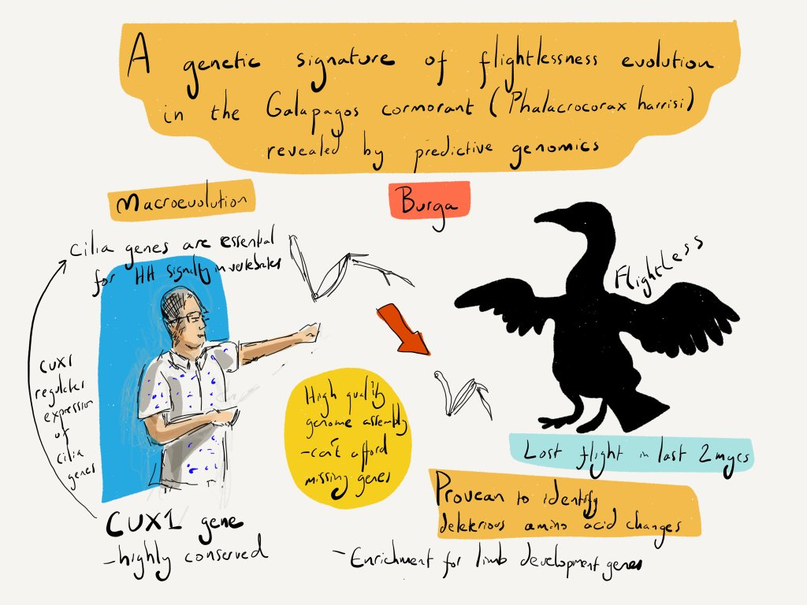

Articles
- A genetic signature of the evolution of loss of flight in the Galapagos cormorant,
Burga, A., Wang, W., Ben-David, E., Wolf, P., Ramey, A., Verdugo, C., Lyons, K., Parker, P., and Kruglyak, L.
Science, 356 (2017)
bioRxiv doi: http://dx.doi.org/10.1101/061432 (2016) - Decoding the evolution of species
Kimberly L. Cooper
Science, 356, 904-905 (2017) -

Sketch by Alex Cagan @ATJCagan. Biology of Genomes 2016
- A maternal-effect selfish genetic element in Caenorhabditis elegans
Ben-David, E.*, Burga, A.*, Kruglyak, L.
Science (2017)
bioRxiv doi: https://doi.org/10.1101/112524 (2017)
(*) Equal contributors - Fitness trade-offs and environmentally induced mutation buffering in isogenic C. elegans
Casanueva, O., Burga, A., and Lehner, B.
Science, 335, 82-85 (2012) - Variable outcome of mutations
Deplancke, B. and Verstrepen, K.
Science, 335, 44-45 (2012) - (Russian) Стресс помогает справиться с вредными мутациями
Markov, A.
Elements (Элементы), January 17 (2012) - Predicting mutation outcome from early stochastic variation in genetic interaction partners
Burga, A., Casanueva, O., and Lehner, B.
Nature, 480, 250-253 (2011) - Genetics: Noise rules
El-Samad, H. and Weissman, J.
Nature, 480, 188-189 (2011) - Gene expression: Genetic support network to the rescue
Tanita Casci
Nature Reviews Genetics , 13, 74 (2012) - Steve Pinker's hair and the muscles of worms
PZ Myers
Pharyngula Blog, Decemeber 19 (2011)
Highlighted in:
Graphical abstract
Highlighted in:
Highlighted in:
Commented in:
Reviews
- Beyond genotype to phenotype: why the phenotype of an individual cannot always be predicted from their genome sequence and the environment that they experience
Burga, A. and Lehner. B.
FEBS Journal, 279, 3765-3775 (2012) - Predicting phenotypic variation from genotypes, phenotypes and a combination of the two
Burga, A. and Lehner. B.
Current Opinion in Biotechnology , 24, 803-809 (2013)
Book Chapters
- "Systems Biology: Principles and applications in plant research” in Plant Systems Biology
Coruzzi G., Burga, A., Katari M., Gutierrez, R
Annual Plant Reviews Volume 35: Plant Systems Biology, 1-40 (2009)